Afin d'illustrer de manière plus visuelle et de présenter avec plus de détails mes divers projets, j'ai décidé de développer moi-même mon portfolio en ligne. Pour cela, j'ai choisi de l'héberger sur GitHub Pages, qui est un outil que j'avais déjà utilisé durant mes cours de NSI. J'ai utilisé les notions en HTML et CSS du programme de Première et Terminale, en apportant du JavaScript pour les sliders par exemple.
Ce portfolio a été entièrement rédigé par mes soins, mais j'ai pris la liberté d'utiliser l'intelligence artificielle de Google, Gemini, afin de m'aider sur les techniques de JavaScript et de CSS que je ne maîtrisais pas forcément. Mais, afin de garder une certaine éthique, j'ai tenu à comprendre ce que faisait chaque morceau de code proposé, y compris la programmation des vagues en SVG de la page d'ouverture.
Pour la direction artistique, j'ai choisi un design épuré et complètement noir et blanc, pour un rendu moderne et minimaliste, qui, sur un écran avec des noirs profonds comme les OLED (de plus en plus courants sur les smartphones), rend particulièrement bien. J'ai choisi comme couleur d'accentuation un bleu clair plutôt futuriste, qui se décline très bien dans les versions floues et textuelles.
J'ai desginé le logo dans le même état d'esprit: Blanc, épuré et Futuriste. Les courbes du bas forment mes initiales (un A et un M), tandis que le motif sur la partie supérieure du cercle est purement décorative, symbolisant une sorte de couronne, mais sans réelle signification, j'ai choisis ce motif pour la pure ésthétique visuelle.
Les polices Nullshock et Conthrax que l'on voit dans les titres et les paragraphes ont été choisies pour leur courbe esthétique qui s'alignait bien avec le logo. J'ai construit tout le site autour de cette DA à la fois ronde et abrupte. Ma couleur de texte grise est là pour apporter un entre-deux entre le noir total du fond et le blanc pur du texte.